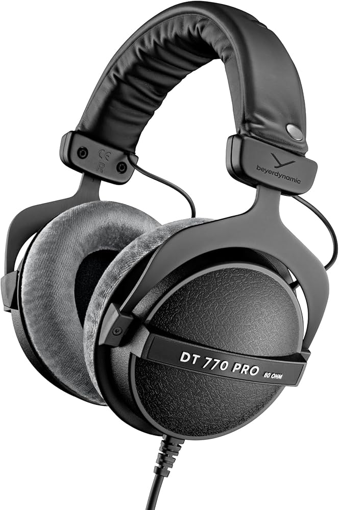
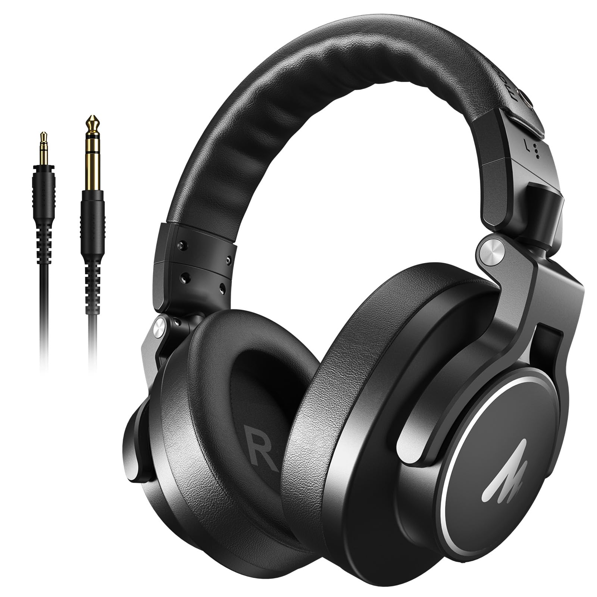
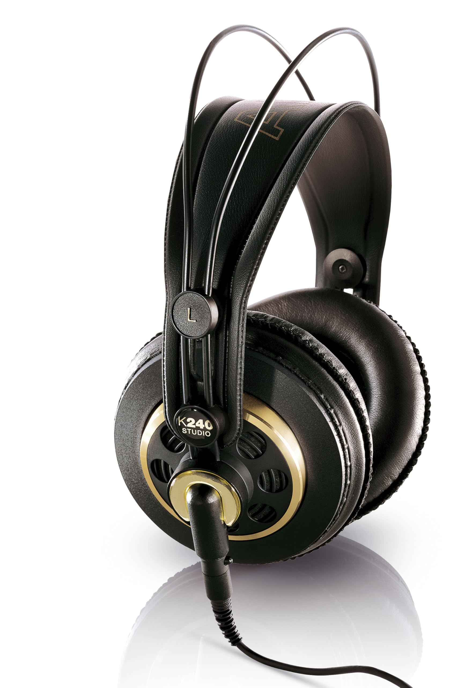

Melhores Headphones para produtores iniciantes (2026)

No mundo da música, o fone de ouvido é a ferramenta que revela cada detalhe da sua mixagem com precisão. Para quem busca clareza sonora, não se pensa duas vezes em investir em um modelo que garanta fidelidade absoluta.
1. beyerdynamic DT 770 Pro 80

O padrão ouro dos estúdios profissionais: fones fechados que oferecem um isolamento impecável e um conforto lendário para longas sessões de gravação.

2. MAONO MH700
A solução versátil para criadores de conteúdo: fones de design fechado com drivers potentes de 50 mm, ideais para quem transita entre podcasts, monitorização de instrumentos e sessões de DJ.

3. AKG K240 Studio
O clássico de design semiaberto para mixagem: oferece um palco sonoro arejado e natural, permitindo que você posicione cada instrumento com clareza sem fadiga auditiva.